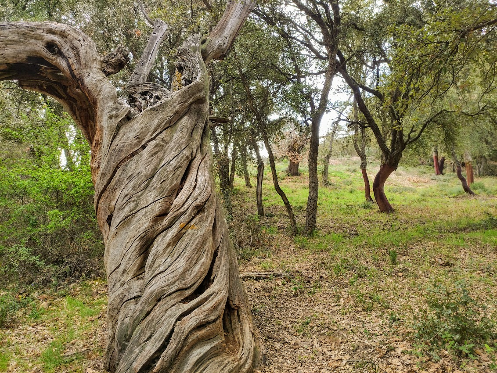

architecture
Patrimonio Vivo
Qué ver
Iglesia de San Antolín, ermita del Santo Cristo, Lagar del Moro, Casona de los Vega y memoria de los carreros.
Iglesia y patrimonio local
arrow_forward

Un pueblo del Bierzo Alto con historia, patrimonio y caminos.
Un pueblo del Bierzo Alto con patrimonio, memoria artesanal y caminos documentados.
Iglesia de San Antolín, ermita del Santo Cristo, Lagar del Moro, Casona de los Vega y memoria de los carreros.
Castañas de Rodanillo y platos tradicionales de El Bierzo, como el botillo y la empanada berciana.
Cuatro recorridos documentados: Camino de la Barrera, Ruta del Santo Cristo, Ruta de la Conquista y Viejo Camino Olvidado.
Historia local, carretería, lagares, fiestas de San Antolín y memoria de sus vecinos.
Patrimonio religioso, arquitectura tradicional y memoria artesanal del propio pueblo.

Iglesia parroquial dedicada al patrón del pueblo. Destacan el retablo churrigueresco del siglo XVIII y la pila bautismal de principios del XVII; la guía local también documenta una esquila fechada en 1645.

El alcornocal pertenece al entorno de Cobrana, localidad vecina; no se encuentra en el núcleo de Rodanillo.

Rodanillo fue conocido en el Bierzo Alto y Laciana como el pueblo de los carros o de los carreros. La plaza del Carro recuerda este oficio tradicional.
Rodanillo se encuentra a unos 5 km de Bembibre y 20 km de Ponferrada, a 710 metros de altitud. Wikipedia recoge 96 habitantes en 2024.
Rodanillo se encuentra en el Bierzo Alto, dentro del municipio de Bembibre, en la provincia de León.
La carretería fue un oficio destacado en Rodanillo y dio al pueblo el sobrenombre de “pueblo de los carros” o “pueblo de los carreros”.
La guía local documenta cuatro rutas: Camino de la Barrera, Ruta del Santo Cristo, Ruta de la Conquista y Viejo Camino Olvidado.
El Catastro de Ensenada de 1752 recogía nueve lagares en funcionamiento en Rodanillo.
Rodanillo pertenece al municipio de Bembibre y se encuentra en la comarca de El Bierzo, en la provincia de León.
Consulta indicaciones actualizadas en el mapa.
El acceso en coche depende del punto de partida y del tráfico.
Consulta las indicaciones actualizadas desde tu punto de partida. El destino es Rodanillo, municipio de Bembibre (León).
Comprueba los horarios y las conexiones vigentes hasta Bembibre antes de viajar; la disponibilidad puede cambiar según el día.
Comarca de El Bierzo · León, España